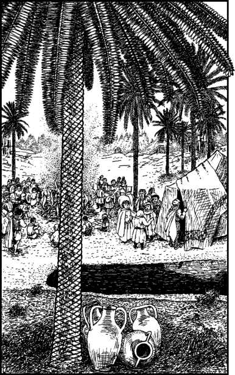

180
Young city children wave and cheer as the caravan trundles out of Bisutan. Soon you cross the great southern bridge, and when you look down at the sparkling blue waters of the Khorda, you see there a flotilla of tiny fishing craft plying their trade. For the first hour of the journey you content yourself with the view and watch the lush scenery and picturesque villages of the river basin pass before your eyes. However, when the caravan enters the Bavari Hills this pleasant landscape soon gives way to a more mundane vista—a seemingly endless sea of barren mounds and arid rocky outcrops.
After a while your attention turns to the other passengers. They are a cheerful group of Vassagonians who are returning to their homes in Bavari after family visits and business in Bisutan. You pass the time exchanging stories and playing cards. You learn that this caravan is regularly used by the merchants of Bavari and Hikas. They prefer to transport their wares by road rather than risk the sea voyage through the Bay of Sharks. Contrary to its name, you hear that there are no longer any sharks in this bay; they migrated to southern waters many centuries ago. One of the passengers jokingly suggests that the reason they left was because of the pirates. The bay is a notorious haunt of buccaneer fleets and renegade privateers.
The surrounding country may be bleak and barren to the eye, but the road is good and the territory is safe. The merchants have established armed outposts every 20 miles which help to deter bandits from raiding the caravans en route. The first night is spent at an outpost and the second night a camp is struck at an oasis where the road is joined by a track. This neglected track traverses the mountains and leads to the Great Masourn Trail, an ancient trade route. Many of your fellow travellers have been looking forward to arriving at the oasis, for it allows them the chance to visit Temujun the Sage—the famous soothsayer of the Dry Main, and when the caravan arrives there, they hurriedly disembark. You watch with fascination as half of your wagon’s passengers scurry towards Temujun’s tent, which is pitched at the edge of a shimmering pool, whilst the other half gather about a blazing campfire and share their food while they enjoy a performance given by a troupe of actors.

If you wish to visit Temujun the Sage, turn to 282.
If you wish to go to the campfire and watch the actors, turn to 40.
If you prefer to stay aboard the empty passenger wagon, turn to 185.